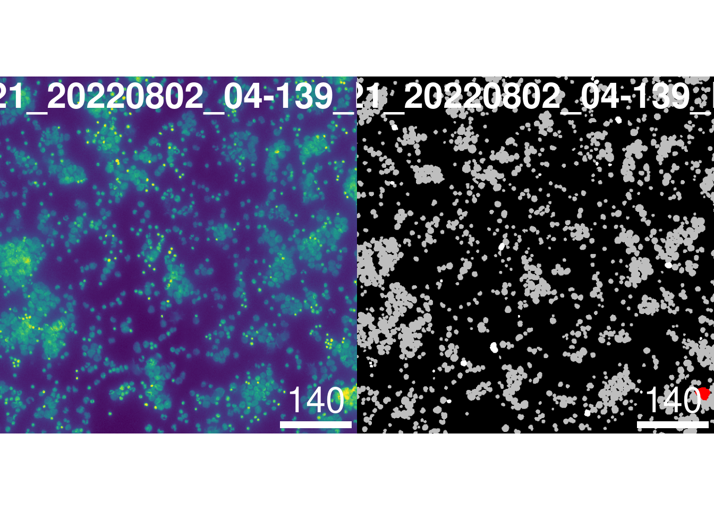

Last updated: 2024-03-27
Checks: 7 0
Knit directory: MapMetSC/
This reproducible R Markdown analysis was created with workflowr (version 1.7.1). The Checks tab describes the reproducibility checks that were applied when the results were created. The Past versions tab lists the development history.
Great! Since the R Markdown file has been committed to the Git repository, you know the exact version of the code that produced these results.
Great job! The global environment was empty. Objects defined in the global environment can affect the analysis in your R Markdown file in unknown ways. For reproduciblity it’s best to always run the code in an empty environment.
The command set.seed(20240314) was run prior to running
the code in the R Markdown file. Setting a seed ensures that any results
that rely on randomness, e.g. subsampling or permutations, are
reproducible.
Great job! Recording the operating system, R version, and package versions is critical for reproducibility.
Nice! There were no cached chunks for this analysis, so you can be confident that you successfully produced the results during this run.
Great job! Using relative paths to the files within your workflowr project makes it easier to run your code on other machines.
Great! You are using Git for version control. Tracking code development and connecting the code version to the results is critical for reproducibility.
The results in this page were generated with repository version b1b42eb. See the Past versions tab to see a history of the changes made to the R Markdown and HTML files.
Note that you need to be careful to ensure that all relevant files for
the analysis have been committed to Git prior to generating the results
(you can use wflow_publish or
wflow_git_commit). workflowr only checks the R Markdown
file, but you know if there are other scripts or data files that it
depends on. Below is the status of the Git repository when the results
were generated:
Untracked files:
Untracked: analysis/04_phenotyping.Rmd
Note that any generated files, e.g. HTML, png, CSS, etc., are not included in this status report because it is ok for generated content to have uncommitted changes.
These are the previous versions of the repository in which changes were
made to the R Markdown (analysis/03_QC_2.Rmd) and HTML
(docs/03_QC_2.html) files. If you’ve configured a remote
Git repository (see ?wflow_git_remote), click on the
hyperlinks in the table below to view the files as they were in that
past version.
| File | Version | Author | Date | Message |
|---|---|---|---|---|
| Rmd | 89a6198 | LazDaria | 2024-03-27 | 03_QC_2.Rmd |
| html | 89a6198 | LazDaria | 2024-03-27 | 03_QC_2.Rmd |
Despite the employment of a highly-accurate (fine-tuned) cellpose model for segmentation, segmentation artifacts can’t be avoided completely. As a second quality control step, we will exclude these before we continue with downstream analysis.
library(ggplot2)
library(cowplot)
library(cytomapper)Loading required package: EBImageLoading required package: SingleCellExperimentLoading required package: SummarizedExperimentLoading required package: MatrixGenericsLoading required package: matrixStats
Attaching package: 'MatrixGenerics'The following objects are masked from 'package:matrixStats':
colAlls, colAnyNAs, colAnys, colAvgsPerRowSet, colCollapse,
colCounts, colCummaxs, colCummins, colCumprods, colCumsums,
colDiffs, colIQRDiffs, colIQRs, colLogSumExps, colMadDiffs,
colMads, colMaxs, colMeans2, colMedians, colMins, colOrderStats,
colProds, colQuantiles, colRanges, colRanks, colSdDiffs, colSds,
colSums2, colTabulates, colVarDiffs, colVars, colWeightedMads,
colWeightedMeans, colWeightedMedians, colWeightedSds,
colWeightedVars, rowAlls, rowAnyNAs, rowAnys, rowAvgsPerColSet,
rowCollapse, rowCounts, rowCummaxs, rowCummins, rowCumprods,
rowCumsums, rowDiffs, rowIQRDiffs, rowIQRs, rowLogSumExps,
rowMadDiffs, rowMads, rowMaxs, rowMeans2, rowMedians, rowMins,
rowOrderStats, rowProds, rowQuantiles, rowRanges, rowRanks,
rowSdDiffs, rowSds, rowSums2, rowTabulates, rowVarDiffs, rowVars,
rowWeightedMads, rowWeightedMeans, rowWeightedMedians,
rowWeightedSds, rowWeightedVarsLoading required package: GenomicRangesLoading required package: stats4Loading required package: BiocGenerics
Attaching package: 'BiocGenerics'The following objects are masked from 'package:stats':
IQR, mad, sd, var, xtabsThe following objects are masked from 'package:base':
anyDuplicated, append, as.data.frame, basename, cbind, colnames,
dirname, do.call, duplicated, eval, evalq, Filter, Find, get, grep,
grepl, intersect, is.unsorted, lapply, Map, mapply, match, mget,
order, paste, pmax, pmax.int, pmin, pmin.int, Position, rank,
rbind, Reduce, rownames, sapply, setdiff, sort, table, tapply,
union, unique, unsplit, which.max, which.minLoading required package: S4Vectors
Attaching package: 'S4Vectors'The following objects are masked from 'package:base':
expand.grid, I, unnameLoading required package: IRanges
Attaching package: 'IRanges'The following objects are masked from 'package:EBImage':
resize, tileLoading required package: GenomeInfoDbLoading required package: BiobaseWelcome to Bioconductor
Vignettes contain introductory material; view with
'browseVignettes()'. To cite Bioconductor, see
'citation("Biobase")', and for packages 'citation("pkgname")'.
Attaching package: 'Biobase'The following object is masked from 'package:MatrixGenerics':
rowMediansThe following objects are masked from 'package:matrixStats':
anyMissing, rowMediansThe following object is masked from 'package:EBImage':
channel
Attaching package: 'cytomapper'The following objects are masked from 'package:Biobase':
channelNames, channelNames<-We will first read the spatial experiment object (SPE) that passed
the first quality check. Please make sure,
path points to the folder where you stored the SPE
object.
path <- params$output
spe <- readRDS(file.path(path,"spe_qc1.rds"))For the exclusion of segmentation artifacts, we will examine three morphological features (area, solidity and aspect ratio). This step will be done for primary tumor and bone marrow samples separately, since these two tissue types have distinct morphological appearances. Bone marrow samples were collected in the form of cytospin samples from bone marrow aspirates (cells in suspension) and hence present inherently different nuclear morphologies.
tissue <- spe$tissue
spe_pt <- spe[,tissue=="PT"]
spe_bm <- spe[,tissue=="BM"]
morph_names <- c("area",
"solidity",
"aspect_ratio-0"
)Next, we plot distributions of morphological features in histograms to identify feature-individual thresholds for the exclusion segmentation artifacts. We start with BM samples.
morph_mat_bm <- as.matrix(t(colData(spe_bm)[,morph_names]))
rownames(morph_mat_bm) <- gsub('-0','',rownames(morph_mat_bm))
colnames(morph_mat_bm) <- colnames(spe_bm)
plot_list <- list()
df <- as.data.frame(t(morph_mat_bm))
for(i in 1: ncol(df)){
feature <- colnames(df)[i]
plot_list[[i]] <- ggplot(df, aes_string(feature)) +
geom_density(adjust = 1, color="darkblue", fill="lightblue")
}
plot <- plot_grid(plotlist = plot_list, nrow=ceiling(ncol(df)/3), ncol=3) #change this to the number of morphological features
plot
| Version | Author | Date |
|---|---|---|
| 89a6198 | LazDaria | 2024-03-27 |
In the plots above, the distributions are skewed indicating the presence of outliers. Let’s examine these outliers cells. We will identify their cell ID and check their morphology in images and masks.
feat <- "area"
morph_mat_order <- morph_mat_bm[feat,order(morph_mat_bm[feat,], decreasing=T)]
outlier_cell <- names(morph_mat_order[2])
value <- morph_mat_order[outlier_cell]
id <- sub(".*_", "", outlier_cell)
image <- sub("_[^_]*$", "", outlier_cell)
print(paste("The outlier cell with ", feat, "=", value, " with ID", id, "is in image", image,"."))[1] "The outlier cell with area = 16972 with ID 1856 is in image 20220921_20220802_04-139_BM_002 ."Let’s inspect this cell in the image and mask.
masks <- loadImages(file.path(params$input, "masks", paste0(image, ".tif")), as.is = TRUE)
img <- loadImages(file.path(params$input, "img", paste0(image, ".tif")))
mcols(masks) <- DataFrame(sample_id = names(masks))
mcols(img) <- DataFrame(sample_id = names(img))
channelNames(img) <- rownames(spe)[1:44]
c = 11
tmp <- spe[,spe$sample_id==image]
tmp$outlier <- "no"
tmp[,colnames(tmp)==outlier_cell]$outlier <- "yes"
dapi_plot <- plotPixels(img,
colour_by = "IF1_DAPI_mean",
bcg = list(IF1_DAPI_mean = c(0, 1, 1)),
legend=NULL,
return_plot = TRUE)mask_plot <- plotCells(masks,
object = tmp,
cell_id = "ObjectNumber",
img_id = "sample_id",
colour_by = "outlier",
colour = list(outlier = c("no" = "gray", "yes" = "red")),
missing_colour = "white",
legend=NULL,
return_plot = TRUE)p1 <- ggdraw(dapi_plot$plot, clip = "on")
p2 <- ggdraw(mask_plot$plot, clip = "on")
plot_grid(p1, p2)
| Version | Author | Date |
|---|---|---|
| 89a6198 | LazDaria | 2024-03-27 |
In the images above, we can see that segmentation artifacts occur, where no clear cell borders can be identified. For BM, we determined an upper threshold of 15,600 and a lower threshold of 250. To examine nuclei with an area below the lower threshold, it is better to visualize images in napari and use the label and zoom function.
We will now repeat the same worfklow for PT samples.
morph_mat_pt <- as.matrix(t(colData(spe_pt)[,morph_names]))
rownames(morph_mat_pt) <- gsub('-0','',rownames(morph_mat_pt))
colnames(morph_mat_pt) <- colnames(spe_pt)
plot_list <- list()
df <- as.data.frame(t(morph_mat_pt))
for(i in 1: ncol(df)){
feature <- colnames(df)[i]
plot_list[[i]] <- ggplot(df, aes_string(feature)) +
geom_density(adjust = 1, color="darkblue", fill="lightblue")
}
plot <- plot_grid(plotlist = plot_list, nrow=ceiling(ncol(df)/3), ncol=3) #change this to the number of morphological features
plot
| Version | Author | Date |
|---|---|---|
| 89a6198 | LazDaria | 2024-03-27 |
As described, PT-derived nuclei have an inherently different morphology. In the histograms above we can see that they are smaller and less round than BM-derived nuclei. Again, we explore outlier cells to identify appropriate thresholds.
feat <- "area"
morph_mat_order <- morph_mat_bm[feat,order(morph_mat_bm[feat,], decreasing=F)]
outlier_cell <- names(morph_mat_order[1])
print(paste("The outlier cell with ", feat, "=", morph_mat_order[outlier_cell], " with ID", sub(".*_", "", outlier_cell), "is in image", sub("_[^_]*$", "", outlier_cell),". Check, whether this cell is an artifact by inspecting the large segmentation masks in napari."))[1] "The outlier cell with area = 6 with ID 12527 is in image 20220808_20220317_12-167_BM_004 . Check, whether this cell is an artifact by inspecting the large segmentation masks in napari."Using the code above and cross-checking images of corresponding nuclei in napari, we can identify a lower threshold of 100 for nuclear area for PT samples. There is however no upper threshold, since the largest cells are also correctly segmented.
Let’s exclude outliers from the SPE object and the morph. feature matrix based on defined thresholds.
outliers <- (spe$area <= 100 & spe$tissue == "PT" | spe$area <= 250 & spe$tissue == "BM" | spe$area >= 15600 & spe$tissue == "BM")
spe <- spe[,!outliers]
#Rebuild the matrix of morphological features of the remaining cells
morph_mat <- as.matrix(t(colData(spe)[,morph_names]))
rownames(morph_mat) <- gsub('-0','',rownames(morph_mat))We excluded 8847 cells based on these thresholds.
Before we save the SPE object, we will clip and scale morphological features for visualization purposes.
norm_minmax <- function(x){(x- min(x)) /(max(x)-min(x))}
clipper <- function(data, lower, upper) {
data[data > quantile(data, probs = c(upper))] <- quantile(data, probs = c(upper))
data[data < quantile(data, probs = c(lower))] <- quantile(data, probs = c(lower))
clipped_data <- norm_minmax(data)
return(clipped_data)}
tissue <- spe$tissue
area_upper <- 0.99999
solidity_lower <- 0.001
aspect_ratio_upper <- 0.9995
clipped_area <- c(clipper(morph_mat[1,tissue=="BM"], 0, area_upper), clipper(morph_mat[1,tissue=="PT"], 0, area_upper))
clipped_area <- clipped_area[colnames(spe)]
morph_mat_clipped <- rbind(clipped_area, clipper(morph_mat[2,], solidity_lower, 1), clipper(morph_mat[3,], 0, aspect_ratio_upper))
colnames(morph_mat_clipped) <- colnames(spe)
rownames(morph_mat_clipped) <- c("area", "solidity", "aspect_ratio")
spe$area_clipped <- unname(morph_mat_clipped["area",])
spe$solidity_clipped <- unname(morph_mat_clipped["solidity",])
spe$aspect_ratio_clipped <- unname(morph_mat_clipped["aspect_ratio",])We plot the distribution of clipped morphological features…
plot_list <- list()
df <- as.data.frame(t(morph_mat_clipped))
for(i in 1: ncol(df)){
feature <- colnames(df)[i]
plot_list[[i]] <- ggplot(df, aes_string(feature)) +
geom_density(adjust = 5, color="darkblue", fill="lightblue")
}
plot <- plot_grid(plotlist = plot_list, nrow=ceiling(ncol(df)/3), ncol=3) #change this to the number of morphological features
plot
| Version | Author | Date |
|---|---|---|
| 89a6198 | LazDaria | 2024-03-27 |
…and visualize the masks in one PT and one BM sample.
morph_names_clipped <- c("area_clipped", "solidity_clipped", "aspect_ratio_clipped")
masks <- loadImages(c(file.path(params$input, "masks/20220525_20220223_06-070_BM_003.tif"),
file.path(params$input, "masks/20220926_20220809_16-005_TU_001.tif")),
as.is = TRUE)
mcols(masks) <- DataFrame(sample_id = names(masks))
plot_list <- list()
for (m in 1:length(morph_names_clipped)){
print(paste0("Plotting: ", morph_names_clipped[m]))
plot_list[[m]] <- plotCells(masks,
object = spe,
cell_id = "ObjectNumber", img_id = "sample_id",
colour_by = morph_names_clipped[m],
return_plot = TRUE,
return_images = TRUE,
legend=NULL
)
}[1] "Plotting: area_clipped"
| Version | Author | Date |
|---|---|---|
| 89a6198 | LazDaria | 2024-03-27 |
[1] "Plotting: solidity_clipped"
| Version | Author | Date |
|---|---|---|
| 89a6198 | LazDaria | 2024-03-27 |
[1] "Plotting: aspect_ratio_clipped"
| Version | Author | Date |
|---|---|---|
| 89a6198 | LazDaria | 2024-03-27 |
From now on, we will use intensity measurements computed based on the dilated mask (by 1px). To reduce the size of the SPE object, we remove intensity measurements obtained based on non-dilated masks and set those based on dilated masks as default.
assay(spe, "counts") <- assay(spe, "counts_1px")
assay(spe, "counts_1px") <- NULL
saveRDS(spe, file.path(params$output, "spe_qc2.rds"))R version 4.2.0 (2022-04-22)
Platform: x86_64-pc-linux-gnu (64-bit)
Running under: Ubuntu 20.04.4 LTS
Matrix products: default
BLAS: /usr/lib/x86_64-linux-gnu/openblas-pthread/libblas.so.3
LAPACK: /usr/lib/x86_64-linux-gnu/openblas-pthread/liblapack.so.3
locale:
[1] LC_CTYPE=en_US.UTF-8 LC_NUMERIC=C
[3] LC_TIME=en_US.UTF-8 LC_COLLATE=en_US.UTF-8
[5] LC_MONETARY=en_US.UTF-8 LC_MESSAGES=en_US.UTF-8
[7] LC_PAPER=en_US.UTF-8 LC_NAME=C
[9] LC_ADDRESS=C LC_TELEPHONE=C
[11] LC_MEASUREMENT=en_US.UTF-8 LC_IDENTIFICATION=C
attached base packages:
[1] stats4 stats graphics grDevices utils datasets methods
[8] base
other attached packages:
[1] cytomapper_1.9.1 SingleCellExperiment_1.20.1
[3] SummarizedExperiment_1.26.1 Biobase_2.56.0
[5] GenomicRanges_1.48.0 GenomeInfoDb_1.32.4
[7] IRanges_2.30.1 S4Vectors_0.34.0
[9] BiocGenerics_0.42.0 MatrixGenerics_1.8.1
[11] matrixStats_1.1.0 EBImage_4.38.0
[13] cowplot_1.1.2 ggplot2_3.4.4
[15] workflowr_1.7.1
loaded via a namespace (and not attached):
[1] SpatialExperiment_1.6.1 ggbeeswarm_0.7.2
[3] colorspace_2.1-0 rjson_0.2.21
[5] ellipsis_0.3.2 rprojroot_2.0.4
[7] circlize_0.4.15 scuttle_1.6.3
[9] XVector_0.36.0 GlobalOptions_0.1.2
[11] fftwtools_0.9-11 fs_1.6.3
[13] rstudioapi_0.15.0 farver_2.1.1
[15] fansi_1.0.6 codetools_0.2-18
[17] R.methodsS3_1.8.2 sparseMatrixStats_1.8.0
[19] cachem_1.0.8 knitr_1.45
[21] jsonlite_1.8.8 png_0.1-8
[23] R.oo_1.25.0 shinydashboard_0.7.2
[25] shiny_1.8.0 HDF5Array_1.24.2
[27] compiler_4.2.0 httr_1.4.7
[29] dqrng_0.3.2 Matrix_1.6-5
[31] fastmap_1.1.1 svgPanZoom_0.3.4
[33] limma_3.52.4 cli_3.6.2
[35] later_1.3.2 htmltools_0.5.7
[37] tools_4.2.0 gtable_0.3.4
[39] glue_1.7.0 GenomeInfoDbData_1.2.8
[41] dplyr_1.1.4 Rcpp_1.0.12
[43] jquerylib_0.1.4 raster_3.6-26
[45] vctrs_0.6.5 rhdf5filters_1.8.0
[47] svglite_2.1.3 DelayedMatrixStats_1.18.2
[49] xfun_0.41 stringr_1.5.1
[51] ps_1.7.6 beachmat_2.12.0
[53] mime_0.12 lifecycle_1.0.4
[55] terra_1.7-65 edgeR_3.38.4
[57] getPass_0.2-4 zlibbioc_1.42.0
[59] scales_1.3.0 promises_1.2.1
[61] parallel_4.2.0 rhdf5_2.40.0
[63] RColorBrewer_1.1-3 yaml_2.3.8
[65] gridExtra_2.3 sass_0.4.8
[67] stringi_1.8.3 highr_0.10
[69] tiff_0.1-12 BiocParallel_1.30.4
[71] shape_1.4.6 systemfonts_1.0.5
[73] rlang_1.1.3 pkgconfig_2.0.3
[75] bitops_1.0-7 evaluate_0.23
[77] lattice_0.20-45 Rhdf5lib_1.18.2
[79] labeling_0.4.3 htmlwidgets_1.6.4
[81] processx_3.8.3 tidyselect_1.2.0
[83] magrittr_2.0.3 R6_2.5.1
[85] magick_2.8.2 generics_0.1.3
[87] nnls_1.5 DBI_1.2.1
[89] DelayedArray_0.22.0 pillar_1.9.0
[91] whisker_0.4.1 withr_3.0.0
[93] sp_2.1-2 abind_1.4-5
[95] RCurl_1.98-1.14 tibble_3.2.1
[97] DropletUtils_1.16.0 utf8_1.2.4
[99] rmarkdown_2.25 viridis_0.6.4
[101] jpeg_0.1-10 locfit_1.5-9.8
[103] grid_4.2.0 callr_3.7.3
[105] git2r_0.33.0 digest_0.6.34
[107] xtable_1.8-4 httpuv_1.6.13
[109] gridGraphics_0.5-1 R.utils_2.12.3
[111] munsell_0.5.0 viridisLite_0.4.2
[113] beeswarm_0.4.0 vipor_0.4.7
[115] bslib_0.6.1
sessionInfo()R version 4.2.0 (2022-04-22)
Platform: x86_64-pc-linux-gnu (64-bit)
Running under: Ubuntu 20.04.4 LTS
Matrix products: default
BLAS: /usr/lib/x86_64-linux-gnu/openblas-pthread/libblas.so.3
LAPACK: /usr/lib/x86_64-linux-gnu/openblas-pthread/liblapack.so.3
locale:
[1] LC_CTYPE=en_US.UTF-8 LC_NUMERIC=C
[3] LC_TIME=en_US.UTF-8 LC_COLLATE=en_US.UTF-8
[5] LC_MONETARY=en_US.UTF-8 LC_MESSAGES=en_US.UTF-8
[7] LC_PAPER=en_US.UTF-8 LC_NAME=C
[9] LC_ADDRESS=C LC_TELEPHONE=C
[11] LC_MEASUREMENT=en_US.UTF-8 LC_IDENTIFICATION=C
attached base packages:
[1] stats4 stats graphics grDevices utils datasets methods
[8] base
other attached packages:
[1] cytomapper_1.9.1 SingleCellExperiment_1.20.1
[3] SummarizedExperiment_1.26.1 Biobase_2.56.0
[5] GenomicRanges_1.48.0 GenomeInfoDb_1.32.4
[7] IRanges_2.30.1 S4Vectors_0.34.0
[9] BiocGenerics_0.42.0 MatrixGenerics_1.8.1
[11] matrixStats_1.1.0 EBImage_4.38.0
[13] cowplot_1.1.2 ggplot2_3.4.4
[15] workflowr_1.7.1
loaded via a namespace (and not attached):
[1] SpatialExperiment_1.6.1 ggbeeswarm_0.7.2
[3] colorspace_2.1-0 rjson_0.2.21
[5] ellipsis_0.3.2 rprojroot_2.0.4
[7] circlize_0.4.15 scuttle_1.6.3
[9] XVector_0.36.0 GlobalOptions_0.1.2
[11] fftwtools_0.9-11 fs_1.6.3
[13] rstudioapi_0.15.0 farver_2.1.1
[15] fansi_1.0.6 codetools_0.2-18
[17] R.methodsS3_1.8.2 sparseMatrixStats_1.8.0
[19] cachem_1.0.8 knitr_1.45
[21] jsonlite_1.8.8 png_0.1-8
[23] R.oo_1.25.0 shinydashboard_0.7.2
[25] shiny_1.8.0 HDF5Array_1.24.2
[27] compiler_4.2.0 httr_1.4.7
[29] dqrng_0.3.2 Matrix_1.6-5
[31] fastmap_1.1.1 svgPanZoom_0.3.4
[33] limma_3.52.4 cli_3.6.2
[35] later_1.3.2 htmltools_0.5.7
[37] tools_4.2.0 gtable_0.3.4
[39] glue_1.7.0 GenomeInfoDbData_1.2.8
[41] dplyr_1.1.4 Rcpp_1.0.12
[43] jquerylib_0.1.4 raster_3.6-26
[45] vctrs_0.6.5 rhdf5filters_1.8.0
[47] svglite_2.1.3 DelayedMatrixStats_1.18.2
[49] xfun_0.41 stringr_1.5.1
[51] ps_1.7.6 beachmat_2.12.0
[53] mime_0.12 lifecycle_1.0.4
[55] terra_1.7-65 edgeR_3.38.4
[57] getPass_0.2-4 zlibbioc_1.42.0
[59] scales_1.3.0 promises_1.2.1
[61] parallel_4.2.0 rhdf5_2.40.0
[63] RColorBrewer_1.1-3 yaml_2.3.8
[65] gridExtra_2.3 sass_0.4.8
[67] stringi_1.8.3 highr_0.10
[69] tiff_0.1-12 BiocParallel_1.30.4
[71] shape_1.4.6 systemfonts_1.0.5
[73] rlang_1.1.3 pkgconfig_2.0.3
[75] bitops_1.0-7 evaluate_0.23
[77] lattice_0.20-45 Rhdf5lib_1.18.2
[79] labeling_0.4.3 htmlwidgets_1.6.4
[81] processx_3.8.3 tidyselect_1.2.0
[83] magrittr_2.0.3 R6_2.5.1
[85] magick_2.8.2 generics_0.1.3
[87] nnls_1.5 DBI_1.2.1
[89] DelayedArray_0.22.0 pillar_1.9.0
[91] whisker_0.4.1 withr_3.0.0
[93] sp_2.1-2 abind_1.4-5
[95] RCurl_1.98-1.14 tibble_3.2.1
[97] DropletUtils_1.16.0 utf8_1.2.4
[99] rmarkdown_2.25 viridis_0.6.4
[101] jpeg_0.1-10 locfit_1.5-9.8
[103] grid_4.2.0 callr_3.7.3
[105] git2r_0.33.0 digest_0.6.34
[107] xtable_1.8-4 httpuv_1.6.13
[109] gridGraphics_0.5-1 R.utils_2.12.3
[111] munsell_0.5.0 viridisLite_0.4.2
[113] beeswarm_0.4.0 vipor_0.4.7
[115] bslib_0.6.1